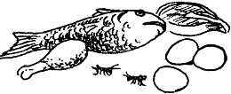

A woman who eats well is much more likely to have a healthy pregnancy and healthy baby.
Pregnant women need to eat more than usual. The extra food gives them enough energy and strength, and helps their babies grow.
Pregnant women should eat a variety of foods, some foods from each of these 3 groups every day:

Carbohydrates: such as rice, maize, wheat, millet, cassava, taro, or plantains.
Proteins: such as beans, peas, lentils, eggs, nuts and seeds, cheese, milk, yogurt, meat, fish, or insects.

Fruits and vegetables: such as leafy greens, carrots, cabbage, peppers, oranges, melons, pineapples, ripe papayas, or mangoes.
If a woman is not getting enough to eat, encourage her family, neighbors, and friends to share with her. Perhaps they can help tend her garden, bring her eggs from their chickens, or cook a bit extra to bring to her.
Iron and folic acid: A pregnant woman also needs to get enough iron to prevent anemia, and folic acid to prevent birth defects in her baby. She should take supplements of these to make sure she gets enough. Each day she should take 400 to 500 mcg folic acid, and
300 mg ferrous sulfate (60 mg iron), until the baby is born.